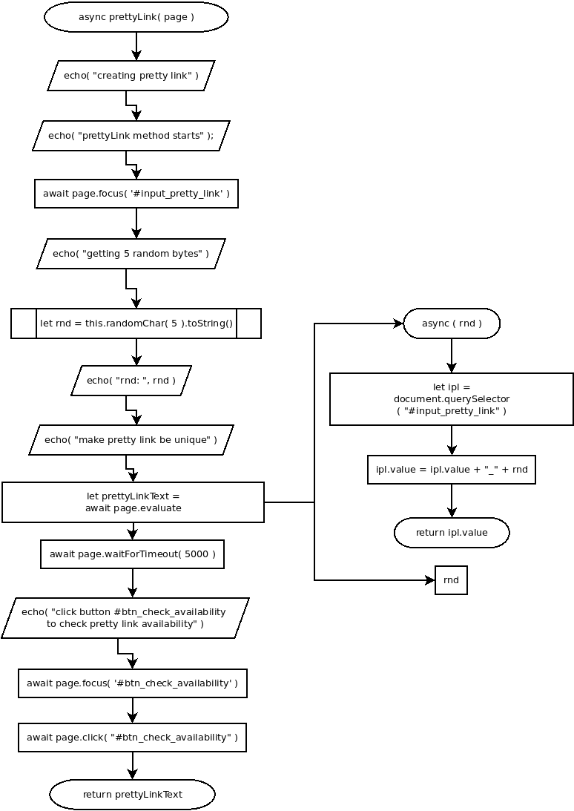

async prettyLink( page )
Flowchart

Code
async prettyLink( page ){
echo( "creating pretty link" );
echo( "prettyLink method starts" );
// set focus on #input_pretty_link
await page.focus( '#input_pretty_link' );
echo( "getting 5 random bytes" );
let rnd = this.randomChar( 5 ).toString();
echo( "rnd: ", rnd );
echo( "make pretty link be unique" );
let prettyLinkText = page.evaluate(
async ( rnd )=>{
let ipl = document.querySelector( "#input_pretty_link" );
ipl.value = ipl.value + "_" + rnd;
return ipl.value;
},
rnd
);
await page.waitForTimeout( 5000 );
echo( "click button #btn_check_availability to check pretty link availability" );
await page.focus( '#btn_check_availability' );
await page.click( "#btn_check_availability" );
return prettyLinkText;
}
Refers to:
-
async randomChar( length )